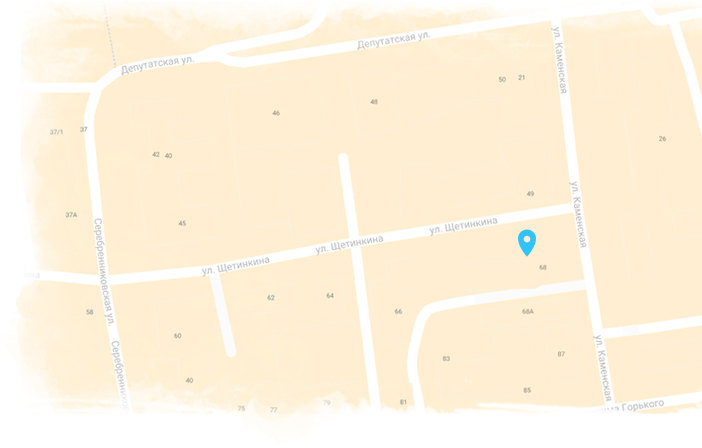

Учёба, путешествие и карьера для еврейской молодёжи
Заказать звонок
Оставьте ваши контактные данные, мы свяжемся с вами в течение рабочего дня и обязательно поможем найти ответ на
ваш вопрос!
Заявка принята
Мы приняли ваши данные и вскоре мы перезвоним вам для уточнения деталей!
О программе
«Маса» — совместный проект правительства Израиля и Еврейского агентства Сохнут. Более 250 учебных программ (60
на русском) и возможность стажировки в Израиле. В течение освоения программ предусмотрен грант от 4200 до
8400$.
Хочешь провести семестр или год в Израиле, знакомясь с различными культурами и идеями, традициями и стилем
жизни, изучая иврит на программе Маса? Изучение иврита, одного из самых древних и необычных языков, не
только увлекательно, но и крайне важно для успешной абсорбции в израильское общество и для твоего
дальнейшего профессионального развития в Израиле. Качественное и эффективное изучение иврита является одной
из неотъемлемых составляющих всего учебного процесса на программах Маса.
Проект Маса предоставляет потрясающую возможность совершить незабываемое путешествие в страну с
тысячелетней историей и уникальным образом жизни, где ты сможешь по-настоящему познать свои исторические
корни и почувствовать себя неотъемлемой частью еврейского народа. Если ты задаешь себе вопросы: "Что делать
дальше?", "Что изучать?", "Где жить?", "Где работать?" или, если, тебе просто хочется новых впечатлений,
эмоций, новых друзей из самых разных стран мира, то не упусти свой шанс стать частью проекта Маса.
Академические
Провести семестр или год за рубежом, знакомясь с различными культурами и идеями, традициями и стилем жизни
— вот что такое учеба за границей! Израиль — это не только центр религиозного мира, это также академический
центр, живая лаборатория идей и творческого исследования.
Может быть, Вы заинтересованы в изучении социологии, мира, юриспруденции, биологии, сравнительной религии,
законодательного и делового администрирования или искусства? Здесь, в Израиле, Вы сможете изучить все это
в удивительной университетской среде.
Стажировки
Проект Маса предлагает выпускникам вузов и молодым профессионалам широкий выбор программ для продвижения
карьеры, профессионального развития в разнообразных сферах и стажировки в Израиле.
Выберите для себя одну из многих возможностей для приобретения знаний, навыков и опыта, необходимых для
профессионального развития в современном мире. Узнай больше профессиональном росте, карьере и стажировках в
Израиле.
Волонтёрство
Маса предлагает уникальные возможности для волонтерской деятельности по всему Израилю. Вы сможете внести
свой неоценимый вклад в развитие израильского общества, сотрудничая с различными общинами и социально
уязвимыми группами населения. Программы волонтерства фокусируются на создании и укреплении общин; помощи
молодежи, находящейся в группе риска; поддержке мирного сосуществования евреев, арабов и других местных
общин.
Все программы волонтерства проекта Маса опираются на еврейскую традицию "тикун олам" (совершенствование
мира) и руководствуются принципами социальной ответственности и социальной справедливости..
Религиозные
Маса предлагает спектр программ, предназначенных для углубления связи с еврейской традицией и народом.
Программы изучения иудаизма варьируются от строгих междисциплинарных исследований еврейского народа и
цивилизации, и изучения Торы в лучших мировых университетах до обучения в лучших йешивах и семинариях
Израиля.
Получите возможность стать частью еврейского народа, понять свою идентичность, окунуться в духовную
атмосферу еврейских ценностей и стать опытным общинным работником. Ваше путешествие вместе с Маса начинается
здесь.
хочу поехать!
Оставьте свой телефон и мы свяжемся с вами, подберём куратора и ответим на все вопросы!
Как поехать
Чтобы узнать подробнее о программе, свяжитесь с координатором в вашем
городе. Вы получите актуальные сведения
о доступных программах и городах, в которых можете пройти программу.
Чтобы иметь возможность получить грант на обучение от 4200 до 8400$, вы должны:
Быть в возрасте от 16 до 30 лет
Иметь оконченное среднее образование
Иметь документально подтверждённые еврейские корни
и пройти консульскую проверку
За последние 2 года быть не больше 3х месяцев подряд
непрерывно в Израиле.
Если вы не подходите по этим правилам, вы всё равно можете принять участие в программе
«Маса», оплатив её
полную стоимость.
Жизнь в Израиле
Помимо учёбы, в рамках программы у вас будет возможность путешествовать по стране
и познакомиться с богатой
культурно-исторической жизнью Израиля и его жителей.
Экскурсии по Израилю и знакомство с его историей
Изучение иврита
Совместные творческие проекты с израильской молодёжью
Обучение современным навыкам и профессиям
Развитие лидерства
#masaisrael
Познакомьтесь с программой от первого лица! Многие участники ведут блоги и фотодневники о жизни, учёбе и
путешествиях в Израиле.
Программы, поддерживаемые проектом Маса, проводятся организаторами, которые
фактически реализуют программы и несут ответственность за их успешное проведение. Сферы деятельности
организаторов самые разные - университеты, колледжи и институты, туристические компании, молодежные
движения и йешивы
Что такое грант на обучение?
Грант Маса - это основное средство, с помощью которого Еврейское агентство
«Сохнут» и правительство Израиля намерены достичь цели проекта. Компания Маса - дочерняя компания
Еврейского агентства, созданная для реализации проектов и выдающая гранты (для жителей СНГ и стран Балтии)
в соответствии с продолжительностью программы и ее стоимостью.
Как определяется стоимость программы?
Полная стоимость определяется организаторами в зависимости от
направления. В большинстве случаев грант «Маса» не покрывает полную стоимость программы, и поэтому
предусматривается определённая доля личного участия.
Что такое грант на обучение?
Грант Маса - это основное средство, с помощью которого Еврейское агентство
«Сохнут» и правительство Израиля намерены достичь цели проекта. Компания Маса - дочерняя компания
Еврейского агентства, созданная для реализации проектов и выдающая гранты (для жителей СНГ и стран Балтии)
в соответствии с продолжительностью программы и ее стоимостью.
Признаётся ли учеба в рамках проекта для
дальнейшего обучения?
Университеты Израиля и западных стран признают академическую учебу в рамках
проекта Маса, если организатор заявляет об академической аккредитации его программы. Ситуация в СНГ более
сложная, и признание обучения зависит, как правило, от решения каждого отдельного учебного заведения.
Выясните заранее в Вашем учебном заведении, будет ли им признана Ваша учеба в рамках проекта Маса, или
сможете ли Вы добиться такой аккредитации по возвращении из Израиля. Руководство проекта Маса не несет
ответственности за академическую аккредитацию. За это отвечает только организатор учебной программы.
Как выглдядит полный процесс регистрации
на программу «Маса»?
Выбор программы. Связь с координатором выбранной программы и запись на
консульскую проверку. Заполнение анкеты на сайте Маса. Загрузить документы об успешном прохождении
консульской проверки на портал участников через личный кабинет. Получение студенческой визы А2 в
консульстве на основании письма от Маса об одобренном гранте.
Отзывы
Мария Михайлова
Программа:
Арт-Тель, февраль-сетнябрь 2017
Долго выбирая программу, на которую ехать - я определилась, взяла на 5 месяцев
«иврит как культура». Мне очень повезло оказаться в надежных и заботливых руках Анны, Юлии и Олега.
С первой же встречи тебе дают понять - что ты не
один, у тебя есть практически
круглосуточная поддержка по любым вопросам. Тебе предоставляют готовое удобное расписание, жилье, приятные
встречи, языковой курс а еще и поездки всей программой в разные уголки страны.
Долго выбирая программу, на которую ехать - я определилась, взяла на 5 месяцев
«иврит как культура». Мне очень повезло оказаться в надежных и заботливых руках Анны, Юлии и Олега.
С первой же встречи тебе дают понять - что ты не
один, у тебя есть практически
круглосуточная поддержка по любым вопросам. Тебе предоставляют готовое удобное расписание, жилье, приятные
встречи, языковой курс а еще и поездки всей программой в разные уголки страны.
Долго выбирая программу, на которую ехать - я определилась, взяла на 5 месяцев
«иврит как культура». Мне очень повезло оказаться в надежных и заботливых руках Анны, Юлии и Олега.
С первой же встречи тебе дают понять - что ты не
один, у тебя есть практически
круглосуточная поддержка по любым вопросам. Тебе предоставляют готовое удобное расписание, жилье, приятные
встречи, языковой курс а еще и поездки всей программой в разные уголки страны.
Долго выбирая программу, на которую ехать - я определилась, взяла на 5 месяцев
«иврит как культура». Мне очень повезло оказаться в надежных и заботливых руках Анны, Юлии и Олега.
С первой же встречи тебе дают понять - что ты не
один, у тебя есть практически
круглосуточная поддержка по любым вопросам. Тебе предоставляют готовое удобное расписание, жилье, приятные
встречи, языковой курс а еще и поездки всей программой в разные уголки страны.
Долго выбирая программу, на которую ехать - я определилась, взяла на 5 месяцев
«иврит как культура». Мне очень повезло оказаться в надежных и заботливых руках Анны, Юлии и Олега.
С первой же встречи тебе дают понять - что ты не
один, у тебя есть практически
круглосуточная поддержка по любым вопросам. Тебе предоставляют готовое удобное расписание, жилье, приятные
встречи, языковой курс а еще и поездки всей программой в разные уголки страны.
Долго выбирая программу, на которую ехать - я определилась, взяла на 5 месяцев
«иврит как культура». Мне очень повезло оказаться в надежных и заботливых руках Анны, Юлии и Олега.
С первой же встречи тебе дают понять - что ты не
один, у тебя есть практически
круглосуточная поддержка по любым вопросам. Тебе предоставляют готовое удобное расписание, жилье, приятные
встречи, языковой курс а еще и поездки всей программой в разные уголки страны.
Куратор является опытным специалистом агентства Сохнут
и знает о проекте «Маса» всё! Свяжитесь с
куратором, узнайте подробнее о программах и выберите свою !

Оставьте ваши контакты, если у вас остались вопросы — мы на них ответим!
Мы не передаём данные третьим лицам. Ваши данные будут в безопасности и вам не придёт спам от нас!